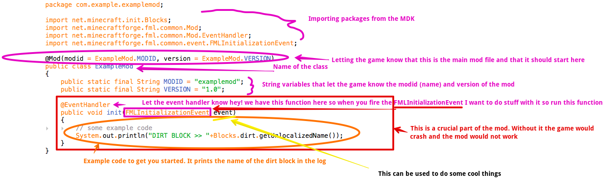

The Minecraft modding community is perhaps one of the largest game modding communities in the world. They are extremely helpful to those who don’t know much about modding so if any help is needed, don’t hesitate to go to minecraftforge.net/forums. Keep in mind that the task of developing a mod is not for those new to computers and programming. With that being said, it is time to start work on this modification.
First if the Java JDK 1.6 is not installed, grab the download from here. Go ahead and run the installer for the current operating system that is going to be used for writing the code. Next up, install the IDE. There are a bunch of different Java Integrated Development Environments(IDEs) out there but a favorite of many modders is JetBrains’ Intellij IDEA. The community edition of Intellij IDEA will suffice for the purpose of developing mods; it can be downloaded from https://www.jetbrains.com/idea/download. Almost done with the downloads, just go to http://files.minecraftforge.net and download the recommended MDK version from the red box on the middle right.
Still here? Great! Up next, time to setup this workspace. Go ahead and go to the desktop or wherever is wanted to keep the modding folder. It is best practice to create a folder called ‘Modding’ to keep all of the modding projects organized in but that is optional. If a modding folder is created, extract the zip file into a folder inside the ‘Modding’ folder. Otherwise, just extract it to the folder that is wanted to store the files. Now the MDK folder needs to be renamed to the name of the mod that is going to be made. Once that has been done, open up Intellij and go through the setup prompts if not already done. When it gets to the project window click on “Import Project” then navigate to where the MDK is. Select the build.gradle file and import the project from that. It will run through a couple of prompt windows all of which ‘OK’ can be selected. The IDE is now setting up the basic workspace for. If problems are encountered while setting up with the IDE then open a terminal window and type “ cd ~/<path-to-MDK-folder> “ and hit enter. Next type “ bash gradlew setupDecompWorkspace idea “. This does what the IDE does from the command line. If command line option is the chosen method of setup, when you import the project just use the .ipr file generated in the folder instead of build.gradle.
Congratulations, that crazy setup process is done. Things are just going to get worse from here on. Just kidding! In the sidebar there should be a list of folders with the mod’s name and dropdown revealing all sorts of other folders. It should be open down through
com.exapmle.examplemodor
com/example/examplemodThe names of those folders are package names. The industry standard format is
<website tld(com, org, io)>.<domain or company name>.<package or mod name>This format is used for the interpreter to figure out where the code is from and how it is organized. There should be a file called examplemod.java. Double-click that file and open it in the IDE. There is should be a bunch of gibberish if Java isn’t common knowledge. That’s okay though. Here is a diagram of the file:
Information overload am I right? Pretty much everything that the mod needs to run will be declared in this one file. Next up, making a block. Right click on the examplemod folder and click on the ‘New Java Class’ in the New menu at the top. Name it myBlock and click OK. It should turn out a basic Java class file with ‘ public class myBlock { ‘. Between the curly brace and the name of the class type ‘extends Block’. Now Intellij should ask to import some classes, which definitely needs to be done. Make sure to choose the class ‘net.minecraft.block.Block’ as that will give the ability to create a new block. The block class is comprised of the class, the actual block, and any functions that add additional functions to the block. So now that the basics are setup, let’s edit the block part. Inside the parenthesis (if it’s not already there) add ‘ Material material ‘. That part makes sure it is passed a material to the block so Minecraft knows how to treat the block in the game. Now to initialize the block. That can be achieved with the ‘ super() ‘ method. Because the block receives the parameter ‘material’ it must initialize the block with that parameter.
That is an image taken from a personal mod that uses a lot of the available modifiers for a block. This is just a simple block, keep in mind that there are so many more possibilities that haven’t been showcased. The creative tab, step sound, hardness, resistance, and harvest level are all used. The getItemDropped function at the bottom is used to change the item that is dropped when the block is destroyed.
Items are programmed in a similar way to blocks. Go ahead and make a new class called myItem and add ‘extends Item’ to the same place as with the block. Below is a very basic item that doesn’t do anything. It initializes with no parameters since none are given, sets the name, sets the texture, and sets the creative tab it should be seen in. Those are the very basics of an item class. Most items actually look similar to this if they are just truly items. There are ItemTools and ItemBuckets that can be made which are much more complex and harder to make.
Now that the first block and item are done, there is so much more to learn. Go and experiment with the other functions and modifiers for both of them, then go learn how to make a tool that shoots explosives. Since the basics ought to be down, learning Java should be a breeze.
To wrap this up, it was written towards a Mac users perspective but besides setting up the IDE, the rest is identical. If anyone reading this has made it this far, your patience is applauded. That was not an easy read. Modding is a very technical and demanding task. There are huge amounts of problem solving involved so don’t be frustrated if the mod is ran and it doesn’t work the first time. That’s why developers debug… a lot. Anyway, congrats on joining the modding community! Get on out there and stun them with modding masterpieces.